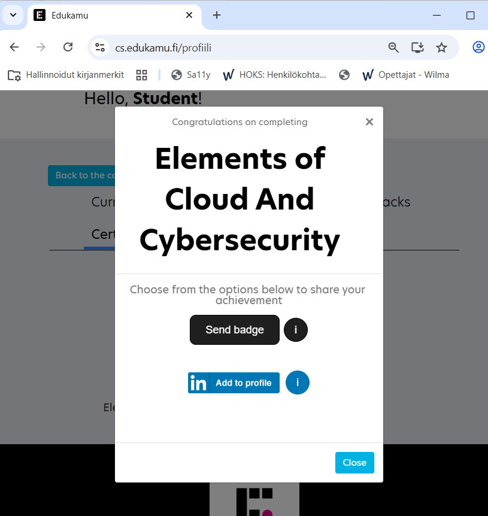

Tietoturvakurssit
Kurssien linkit
Tehdään kaksi kurssia:
- Johdatus pilvipalveluihin ja kyberturvallisuuteen (tai Elements of cloud and cybersecurity), rekisteröidy koulun sähköpostilla ja valitse tyypiksi Vierailija.
- Ethical Hacker, kutsulinkki opettajalta
Johdatus pilvipalveluihin ja kyberturvallisuuteen
Kun saat opintojakson suoritettua valitse Oma profiili ja lisää badge suorituksestasi omalle LinkedIn-profiilillesi.

Ethical Hacker
Ethical Hacker, kutsulinkki opettajalta. Tehdään vain nämä osiot:
- 6.1. Overview of Web Application-Based Attacks for Security Professionals and the OWASP Top 10 (EI labs)
- 6.4 Understanding Injection-Based Vulnerabilities (WebGoat harjoitukset, DVWA labra)
- 6.5. Exploiting Authentication-Based Vulnerabilities
- 6.6. Exploiting Authorization-Based Vulnerabilities
- 6.7. Understanding Cross-Site Scripting (XSS) Vulnerabilities (WebGoat harjoitukset, DVWA labra)
- 6.8. Understanding Cross-Site Request Forgery (CSRF/XSRF) and Server-Side Request Forgery Attacks
- 6.12. Exploiting Insecure Code Practices Lisätehtävä: Final Capstone Activity
Kun saat vaaditun osion tehtyä näytä suoritus opettajallesi.